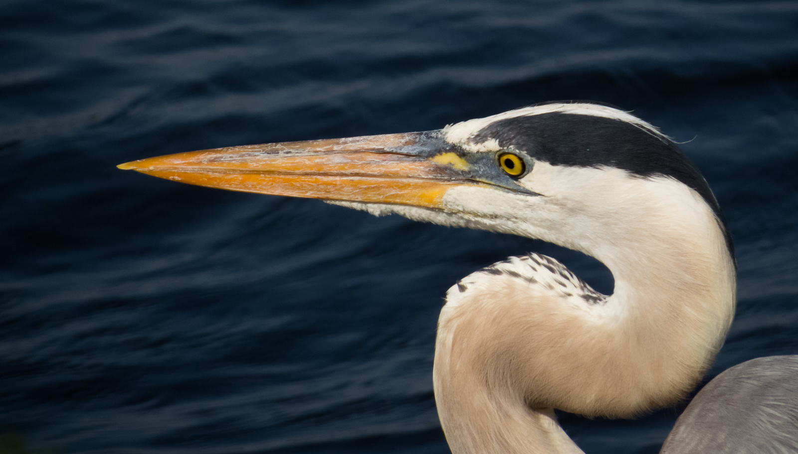

Curated Fine Art Prints
Florida wildlife and quiet natural moments, printed for the wall.
A curated collection of Florida wildlife, wetlands, coastal light, and nature images selected for atmosphere, subject strength, and wall-art presentation.

Quiet Profile
Featured Prints
Selected Work
A small selection of images chosen for wall-art appeal rather than volume.
Explore Collections
Browse by Theme
About
About Brett Ossman Photography
I photograph Florida wildlife, wetlands, coastal scenes, and quiet natural moments with an emphasis on atmosphere, light, and wall-art presentation.
This site highlights a curated selection of my work, with print ordering handled through Fine Art America.